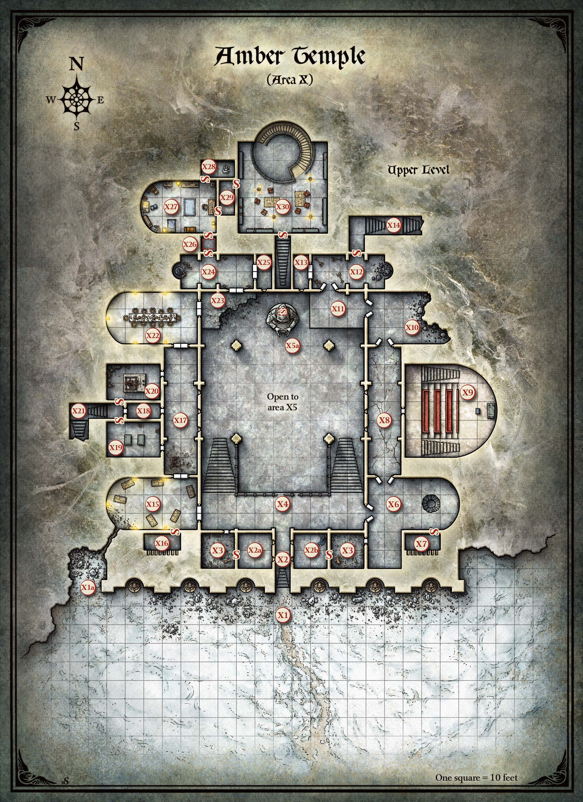

선한 성향의 마법사들로 이루어진 비밀 결사가 2천여 년 전 발리녹 산맥(Balinok Mountains)에 호박 사원(Amber Temple)을 건설했다. 그들은 포획한 악의 잔영(vestiges)—죽은 사악한 존재들의 잔해—과 수집한 금단의 지식을 봉인할 금고가 필요했다. 그들은 이 사원을 비밀의 신에게 봉헌했으며, 그 신이 세상의 끝까지 이곳을 숨겨줄 것이라 믿었다. 불행히도 신의 의지조차 다른 악한 존재들이 사원의 위치를 알아내는 것을 막지 못했다. 마법사들은 사원의 비밀이 악인의 손에 떨어지지 않도록 직접 지켜야 했다. 사원에 봉인된 악의 세력은 결국 마법사들을 타락시켜 서로를 적대하게 만들었다.
마법사들이 모두 죽고 사라진 뒤, 엑세잔터(Exethanter)라는 이름의 사악한 대마법사가 사원에 도착했다. 그는 사원의 수호 결계를 뚫고, 호박에 갇힌 잔영에게 말을 걸어 리치(lich)가 되는 비밀을 알아냈다. 리치로 변한 엑세잔터는 사원을 장악하고, 이전 수호자들의 두개골을 자신의 명령을 따르는 화염해골(flameskulls)로 만들었다. 이후 엑세잔터는 스스로 사원의 감시자가 되었으나, 그 사악한 비밀을 감추기 위해서가 아니라 공개적으로 나누기 위해서였다. 그 사이 사원 안의 악은 서로를 먹으며 점점 강해졌다.
스트라드(Strahd)가 불멸을 찾아 사원을 방문했을 때, 엑세잔터는 그가 운명의 사람임을 감지했다. 사원의 악한 힘들은 그보다 훨씬 강한 것을 느꼈다: 자신들의 것을 능가하는 어둠이었다. 스트라드는 이 악의 잔영들과 교감하고 계약을 맺었다. 스트라드가 나중에 동생 세르게이(Sergei)를 살해했을 때, 그 계약은 피로 봉인되었다. 스트라드는 뱀파이어로 변했고, 어둠의 힘(Dark Powers)은 그의 땅을 감옥으로 바꾸었다.
스트라드는 새로운 마법을 배우고 운명에서 벗어날 방법을 찾기 위해 사원에 여러 번 돌아왔지만, 어둠의 힘은 그를 놓아줄 의사가 없다. 최근 수년간 엑세잔터에게도 힘든 시기였다. 그의 육체와 정신은 무너져 가고 있었다. 리치는 쇠약해지고 건망증이 심해졌다. 그는 더 이상 자신의 이름이나 주문을 기억하지 못한다. 그가 아는 것은 스트라드의 영역을 만든 어둠의 힘이 이 사원에서 태어났다는 것, 그리고 이 존재들이 스트라드가 대표하는 악을 먹고 산다는 것뿐이다. 스트라드는 그들을 지탱하는 어둠이다.
사원을 방문하는 캐릭터들은 거대한 악의 존재를 감지할 수 있다. 사원에 갇힌 어둠의 잔영들은 캐릭터들을 타락시키려 하며, 그들의 진정한 마음속에 도사린 악의 맛을 대가로 비밀과 선물을 제안한다.
나는 그리 빨리 '죽음'이라 불리고 싶지 않았다. 나는 죽음과 계약을 맺었다, 피의 계약을.
—스트라드의 서(The Tome of Strahd)
다음 구역들은 아래의 호박 사원 지도에 표시된 명칭에 대응한다.

사원의 모든 문은 철제 경첩과 부속물이 달린 반투명 호박 블록으로 만들어져 있다. 별도의 언급이 없는 한, 사원의 화살 구멍은 너비 5인치, 높이 4피트, 두께 1피트다.
눈보라가 몰아치는 자갈길이 촐렌카 고개(Tsolenka Pass)에서 북쪽 사원을 향해 산비탈을 오른다. 캐릭터들이 이 길의 끝에 도달하면 다음을 읽어준다:
눈 아래 자갈길이 사라지지만, 앞쪽 가파른 산비탈에 새겨진 어떤 사원의 정면을 볼 수 있을 만큼은 이어져 있다. 건물의 전면은 높이가 50피트이며, 20피트 높이의 조각상이 들어 있는 벽감이 여섯 개 있다. 각 조각상은 단일 호박 블록을 깎아 만든 것으로, 얼굴 없는 두건 쓴 형상이 기도하듯 양손을 모으고 있다. 가장 안쪽 두 조각상 사이에 20피트 높이의 아치형 입구가 있으며, 아래로 내려가는 계단이 보인다.
호박 조각상들은 피해에 면역이다. 조각상을 오래 바라보면 불안감에 사로잡힌다.
사원 정면의 서쪽 산비탈에 자연적인 균열이 생겨, 너비 2피트, 높이 10피트, 깊이 15피트의 틈이 만들어져 있다. 틈 너머 방에서 빛이 들어오고, 사람의 목소리도 들린다.
이 균열은 X15 구역으로 이어진다. 캐릭터들이 바깥에서 많은 소음을 내면, 그 구역의 생물 중 하나가 소란을 조사하러 온다.
캐릭터들이 조각상 사이의 아치형 입구를 통과하면 다음을 읽어준다:
얼음장 같은 계단이 10피트 아래 세월에 훼손된 복도로 내려간다. 벽에는 화살 구멍이 나 있다. 복도 너머로 광활하고 장엄한 어둠이 펼쳐진다.
복도는 X1 구역과 X4 구역을 연결한다. 화살 구멍 뒤의 방(X2a 및 X2b 구역)에는 경비병이 없다.
이 빈 방은 비밀 문 뒤에 있다. 천장 높이는 10피트다. 동쪽 벽에 화살 구멍 두 개가 나 있다.
이 방은 비밀 문 뒤에 있다.
이 10피트 높이, 20피트 정사각형 방의 서쪽 벽에 화살 구멍 두 개가 나 있다. 북동쪽 구석에 파란 마법사 로브를 입고 가슴에 완드를 꼭 쥔 해골이 쓰러져 있다.
해골은 동사한 마법사의 유해다. 위협이 되지 않는다.
해골은 비밀의 완드(wand of secrets)를 쥐고 있다.
이 얼어붙은 20피트 정사각형 방의 바닥에 산산조각 난 나무 파편이 널려 있다.
각 방의 천장 높이는 10피트다. 나무 파편은 경비병 침대의 잔해다.
각 방의 벽에 있는 비밀 문을 당기면 X2a 또는 X2b 구역이 나타난다.
난간이 부서진 20피트 너비의 검은 대리석 발코니가 광활한 사원을 내려다보고 있다. 발코니 양쪽 끝의 검은 대리석 계단이 30피트 아래 사원 바닥으로 내려간다. 아치형 천장은 발코니 위 30피트에 있다. 벽과 천장은 호박 유약으로 덮여 있어 어둠에 황금빛 광택을 더한다. 발코니 서쪽 끝에 호박 이중문이 닫혀 있다. 동쪽에도 비슷한 이중문이 열려 있다.
수동 지혜(감지) 점수가 12 이상인 사람은 사원을 내려다보는 벽의 화살 구멍을 발견한다(이 화살 구멍에 대한 자세한 내용은 X8 및 X17 구역 참조). 캐릭터의 광원이나 시야가 90피트 이상이면, 사원 반대편 끝의 거대한 얼굴 없는 조각상(X5a 구역)을 볼 수 있다.
동쪽의 열린 문은 X6 구역으로 이어진다. 서쪽의 이중문은 X15 구역으로 열린다. 서쪽 문에 귀를 기울이는 캐릭터는 너머에서 거친 인간형 목소리를 듣지만, 무슨 말인지는 알아들을 수 없다.
네 개의 검은 대리석 기둥이 사원의 아치형 천장을 지탱하고 있다. 사원 북쪽 끝에는 흐르는 로브를 입고 두건을 쓴 40피트 높이의 조각상이 서 있다. 조각상의 돌 손은 마치 주문을 시전하는 듯 앞으로 뻗어 있다. 그 얼굴은 완전한 흑암의 공허다. 이 불길한 조각상은 두 개의 검은 대리석 발코니 사이에 서 있는데, 그중 하나는 일부가 무너져 사원의 검은 대리석 바닥 위로 떨어져 있으며, 열린 출입구 앞에 있다. 사원의 벽은 호박으로 덮여 있고, 그곳에서 나가는 문들도 호박으로 만들어져 있다. 호박으로 코팅된 아치형 복도가 서쪽과 동쪽으로 사원에서 이어진다. 이 출구들 옆에는 뾰족한 모자를 쓰고 황금 지팡이를 든 로브 차림의 인간 마법사 백색 대리석 조각상이 있는 벽감이 있다. 그중 하나는 넘어져 바닥에서 산산조각 나 있다.
네페론(Neferon)이라는 이름의 아르카나로스(arcanaloth)가 거대 조각상의 빈 머리(X5a 구역) 안에서 이 사원을 지키고 있으며, 보이는 즉시 장거리 주문으로 캐릭터들을 공격한다. 진실시야 덕분에 아르카나로스는 투명한 존재를 보고 마법 어둠을 꿰뚫어 볼 수 있다. 캐릭터들은 조각상의 얼굴과 머리를 감싼 마법 어둠을 꿰뚫어 볼 수 없는 한 네페론을 볼 수 없다.
아르카나로스가 주문을 시전하기 시작하면, X17 구역의 화염해골 셋이 사원을 내려다보는 화살 구멍 뒤에 자리를 잡고 보이는 캐릭터들에게 매직 미사일(magic missile)과 파이어볼(fireball) 주문을 시전한다.
사원 천장의 높이는 60피트다. 넓은 검은 대리석 계단이 30피트 올라가 남쪽 발코니(X4 구역)로 이어진다. 조각상 양옆의 발코니(X11 및 X23 구역)도 높이 30피트다.
상층 갤러리(X8 및 X17 구역)와 사수 초소(X13 및 X25 구역)의 벽에 난 화살 구멍이 사원을 내려다본다. 사원 벽을 덮은 호박 유약 때문에 이 화살 구멍을 발견하기 어렵다. 수동 지혜(감지) 점수가 12 이상인 캐릭터만 이를 알아챈다. 화살 구멍 뒤의 생물은 3/4 엄폐를 받는다.
대리석 마법사 조각상은 높이 8피트다. 9피트 높이의 황금 지팡이는 벗겨지는 금색 페인트가 칠해진 연철로 만들어졌다. 북동쪽 조각상은 지진이 벽감의 벽을 무너뜨렸을 때 넘어졌다.
이 40피트 높이의 화강암 조각상은 얼굴 없는 비밀의 신을 묘사한다. 조각상 뒤쪽 바닥에 비밀 문이 있으며, DC 20 지혜(감지) 판정에 성공하면 발견할 수 있다. 문을 당기면 조각상의 빈 머리 바닥에 있는 석재 함정문으로 올라가는 나선 계단이 나타난다.
아르카나로스 네페론은 조각상의 빈 머리 안에 은신하고 있다. 머리 내부를 가득 채운 마법 어둠의 장은 조각상의 인간형 얼굴을 숨기고 있다. 이 어둠은 해제할 수 있다(DC 17).
2피트 너비의 눈구멍 한 쌍이 조각상 남쪽의 사원 바닥과 남쪽 발코니(X4 구역)를 장애물 없이 내려다볼 수 있게 해준다. 눈구멍을 통해서는 북쪽 발코니(X11 및 X23 구역), 그 아래 구역, 또는 조각상 뒤나 바로 위를 볼 수 없다. 눈구멍은 머리 바깥에서 오는 공격에 대해 아르카나로스에게 3/4 엄폐를 부여한다.
네페론은 금테 안경을 쓰고 마법 로브를 입고 있다(아래 "보물" 참조). 아르카나로스는 자기 변신(alter self) 주문과 기만 기술을 사용하여 하인리히 슈톨트(Heinrich Stolt)라는 긴 흰 수염을 가진 늙은 인간 마법사로 위장한다. "하인리히"는 혼란스러운 척한다. 캐릭터들이 왜 공격했느냐고 물으면, 사원을 지키고 있었다고 주장한다. 아르카나로스가 히트 포인트의 절반 이상을 잃으면, 사원 바닥으로 순간이동한 뒤 투명해져서 가장 안전한 경로로 도주하며, 안전할 때 다시 캐릭터들을 공격한다. 아르카나로스는 어떤 상황에서도 호박 사원을 떠나지 않는다.
아르카나로스는 자신이 준비한 마법사 주문이 담긴 주문서를 소지하고 있다(몬스터 편람의 스탯 블록 참조). 분홍 수정 렌즈가 달린 작은 금테 안경(250 gp)을 쓰고, 다음 여덟 개의 패치가 남은 유용한 물건의 로브(robe of useful items)를 입고 있다:
각 패치에 대한 자세한 내용은 던전 마스터 안내서의 로브 설명을 참조하라.
카드 점술 결과 보물이 여기에 있다고 나왔다면, 그것은 조각상 머리 안쪽 바닥에 놓여 있다.
사원 북벽 중앙에 비밀 문이 있다. 비밀 문을 찾으려는 캐릭터가 DC 20 지혜(감지) 판정에 성공하면 벽을 덮은 호박 유약의 이음새를 감지하여 문의 존재를 알아챈다. 문에는 열리지 않게 하는 비전 자물쇠(arcane lock) 주문이 걸려 있지만, 문을 세 번 두드리면 1분간 열리며 먼지 쌓인 돌계단이 나타난다. 계단은 30피트 올라가 또 다른 비밀 문에 도달하는데, 이 문은 생물이 5피트 이내로 접근하면 자동으로 열린다. 이 계단은 X30 구역으로 이어진다.
이 호박 이중문은 비전 자물쇠(arcane lock) 주문으로 봉인되어 있다. 이를 억제하는 암호는 "에테르나(Etherna)"다. DC 25 근력 판정에 성공하면 문을 밀어 열 수 있다. 문(AC 15, 60 히트 포인트)은 부숴 열 수도 있다. 히트 포인트가 0이 되면, 문 바로 북쪽의 30피트 정육면체 공간에 괴사 에너지가 가득 찬다. 그 구역의 생물은 22(4d10) 괴사 피해를 받으며, 히트 포인트가 0이 되면 먼지로 변한다. 문 너머에는 사원 지하 묘지(X31 구역)가 있다.
이 아치형 복도는 높이 20피트까지 솟아 있다. 호박 유약에 비친 자신의 모습이 보인다. 하지만 그 모습은 움직임을 따라하지 않는다. 대신 팔을 흔들며 소리 없는 경고를 보내고 있다.
캐릭터들의 기이한 반영은 사원 탐험을 단념시키기 위한 환영이다. 이 환영은 해제할 수 있다(DC 15).
동쪽 복도는 X32 구역으로, 서쪽 복도는 X36 구역으로 이어진다.
이 방에는 특별한 것이 없다. 다만 동쪽 바닥에 거칠게 깎인 지름 10피트의 원형 구멍이 있고, 벽을 따라 빈 횃불 꽂이가 있다. 호박 이중문이 북쪽과 서쪽으로 열려 있다. 서쪽 이중문 바로 남쪽에 닫힌 문이 하나 있다.
천장 높이는 20피트다. 북쪽의 열린 문 너머로 호박으로 덮인 벽이 있는 길고 넓은 복도(X8 구역)가 보인다.
바닥의 구멍은 대략적으로 깎인 수직 통로를 형성하며, 20피트 내려간 뒤 X33a 구역의 천장을 뚫고 나간다. 통로 바닥에서 X33a 구역의 바닥까지 다시 10피트를 떨어져야 한다. 통로에는 손잡이가 많아 능력 판정 없이 오를 수 있지만, 아래 바닥에 도달하려면 마지막 10피트는 떨어져야 한다. 캐릭터들이 많은 소음을 내면, X33a 구역의 화염해골 셋이 통로를 올라와 공격한다. 화염해골들은 통로를 내려가려는 소리가 들리는 상대도 공격한다.
남벽의 비밀 문은 X7 구역으로 열린다.
이 먼지 쌓인 공간의 남벽에 두루마리나 지도를 넣기에 알맞은 원통형 구멍들이 파여 있다.
마법사들은 사원이 공격받을 때를 대비해 여기에 마법 두루마리를 보관했다. 두루마리들은 먼지로 부서져 있다.
호박 유약이 이 20피트 너비, 70피트 길이의 아치형 복도 벽을 덮고 있다. 복도 양쪽 끝의 호박 문은 열려 있다. 동쪽 벽 중앙에 닫힌 문이 하나 있고, 그 맞은편 벽에 화살 구멍 세 개가 나 있다. 검은 대리석 바닥에 복도 길이로 금이 가 있다.
바닥의 금은 X10 구역의 골렘이 낸 것이다. 화살 구멍은 너비 5인치, 높이 2.5피트, 두께 1피트이며, 사원(X5 구역)을 내려다본다.
천장에 매달린 붉은 구리 등잔들이 이 방을 환하게 비추고 있다. 벽은 주문서를 든 마법사들의 부조로 형상화된 호박으로 덮여 있다. 북쪽과 남쪽의 계단이 20피트 아래의 흑요석 강단으로 내려가며, 강단 뒤에는 검은 점판암이 사슬에 매달려 있다. 계단 사이에는 붉은 대리석 벤치가 내림차순으로 놓여 있다.
매달린 등잔에는 영속 불꽃(continual flame) 주문이 걸려 있다. 검은 점판암은 한때 칠판으로 사용되었으며 분필 자국이 약간 남아 있다.
빌니우스는 자신이 준비한 모든 주문이 담긴 주문서를 소지하고 있다. 또한 로브 아래에 뒤집힌 V자 형태의 금제 아뮬렛을 숨기고 있다. 정교한 디자인의 이 아뮬렛은 1,000 gp의 가치가 있으며, X35 구역의 방패 수호자(shield guardian)를 제어하는 아뮬렛이다.
그는 아뮬렛이 마법적이라는 것은 알지만 그 용도는 모른다. 아뮬렛은 방패 수호자의 10피트 이내에 오면 진동한다. 빌니우스가 아뮬렛의 기능을 깨달으면 절대로 내놓지 않는다.
이 빈 석조 방의 동쪽 부분은 벽과 천장이 무너져 있다. 서쪽과 남쪽에는 열린 호박 문이 있다. 방 중앙에 금이 간 호박으로 만든 10피트 높이의 자칼 머리 전사 조각상이 있다. 조각상이 돌아서서 주먹을 쥔다.
천장 높이는 20피트이며, 벽에는 빈 횃불 꽂이가 줄지어 있다. 조각상은 손상된 호박 골렘(amber golem)이다(몬스터 편람의 스톤 골렘(stone golem) 스탯 블록을 사용한다). 히트 포인트는 145이며, 보이는 모든 생물을 공격하고 아무것도 보이지 않을 때만 멈춘다.
오래전 지진으로 방의 동쪽 부분이 무너졌다.
이 검은 대리석 발코니는 바닥에서 30피트 높이에 있으며, 사원의 북동쪽 모서리를 내려다본다. 이 발코니에서 나가는 두 개의 호박 문은 열려 있다.
캐릭터들은 북쪽 문 서쪽에 화살 구멍을 볼 수 있다(X13 구역 참조).
이 빈 석조 방은 서쪽의 현관과 동쪽의 성소로 이루어져 있다. 현관 바닥에는 촛대 네 개가 먼지 위에 쓰러져 있다. 성소 동쪽 끝의 높인 벽감에는 산산조각 난 흑요석 조각상의 파편이 흩어져 있다. 성소의 남북 벽에는 빈 벽감이 두 쌍씩 줄지어 있다.
X10 구역의 호박 골렘이 촛대를 넘어뜨리고 흑요석 조각상을 분쇄했다. 이 조각상은 X5 구역에 서 있는 것과 같은 이름 없는 신을 묘사하고 있었다. 서벽의 호박 문은 X13 구역으로 열린다.
북벽 벽감 중 하나의 안쪽에 비밀 문이 있다. 당기면 X14 구역으로 열린다.
이 좁은 방의 남벽 중앙에 화살 구멍이 있다.
천장 높이는 10피트다. 화살 구멍은 거대 조각상(X5a 구역)의 올린 왼팔 아래로 사원 바닥(X5 구역)을 내려다본다.
캐릭터들이 계단 꼭대기의 비밀 문을 열면 다음을 읽어준다:
먼지 쌓인 복도가 북쪽으로 향하다가 동쪽으로 꺾이며 어두운 계단이 내려간다. 공기가 희박하지만 죽음의 악취가 무겁게 감돈다.
10피트 길이의 계단 세 구간이 중간 참 사이로 총 30피트를 내려가 X14a 구역에 도달한다. 계단을 내려갈수록 악취가 강해진다.
계단이 호박 유약이 칠해진 높은 천장과 벽이 있는 무너진 복도로 내려간다. 잔해가 바닥 대부분을 덮고 있으며, 잔해 사이로 열린 출입구를 향한 길이 나 있다. 죽음의 악취가 거기서 풍겨오는 듯하다.
이 폐허 구역은 한때 X32 구역과 연결되어 있었으나, 지진으로 천장과 벽이 무너졌다. 천장 높이는 25피트다.
캐릭터들이 광원을 끄고 조용히 이동하지 않는 한, X33c 구역의 생물들이 접근을 듣고 공격 준비를 한다.
이 방에는 검투사(gladiator, CE 여성 인간) 한 명, 광전사(berserker, CE 남녀 인간) 다섯 명, 그리고 다이어 울프(dire wolf) 한 마리가 있다. 검투사와 광전사들은 피에 굶주린 산악 부족이며, 다이어 울프는 스트라드의 하수인이다. 다이어 울프는 매혹되거나 공포에 빠지지 않는다.
적을 예상하지 않을 때, 검투사와 광전사들은 바닥에 앉아 무기를 갈고 있으며, 다이어 울프는 방 한가운데서 자고 있다. 검투사와 광전사들은 죽을 때까지 싸운다. 다이어 울프는 히트 포인트가 절반 미만으로 떨어지면 사원을 빠져나간다(동쪽으로, X4와 X2 구역을 통해).
횃불이 꽂힌 빈 석조 방이다. 꿰맨 동물 가죽으로 만든 침낭 여섯 개가 바닥에 펼쳐져 있다. 남서쪽 벽의 균열로 찬 바람이 들어온다.
광전사들의 갑옷과 무기 외에는 가치 있는 것이 없다. 광전사들은 북쪽의 화염해골("불의 정령")을 알고 있으며, X17 구역으로 가는 문을 닫아 두고 있다.
남서쪽 벽에 균열이 생겨 있다. 틈은 너비 2피트, 높이 10피트, 깊이 15피트이며, 바깥(X1a 구역)으로 이어진다.
남벽의 비밀 문은 X16 구역으로 열린다. 산악 부족도 다이어 울프도 이 문을 모른다.
검투사 헬와(Helwa)는 산에서 사냥하는 동안 이 방을 은신처로 사용한다. 그녀와 광전사들은 사원의 역사나 목적에 대해 아무것도 모른다.
위치를 제외하면 이 방은 X7 구역과 동일하다.
이 20피트 너비, 70피트 길이의 아치형 복도 벽은 호박으로 덮여 있다. 복도 남쪽 절반은 화재로 그을려 있으며, 타버린 모피 망토 아래 숯이 된 시체가 바닥에 누워 있다. 여러 호박 문이 이 복도에서 나가고, 동쪽 벽에는 화살 구멍 세 개가 나 있다. 복도 한가운데에 녹색 불꽃에 싸인 해골 셋이 떠 있다.
화염해골(flameskull) 셋이 이 복도를 지키며, 들어오는 생물을 공격한다. 화염해골들은 복도를 떠나지 않는다.
숯이 된 시체는 힘을 찾아 호박 사원에 온 자카리온(Jakarion)이라는 마법사의 유해다. 화염해골들이 그 마법사를 소각했다.
화살 구멍은 사원(X5 구역)을 내려다본다.
죽은 마법사의 주문서는 살아남지 못했지만, 그의 지팡이는 남았다. 이것은 서리의 지팡이(staff of frost)다. 지팡이에는 마법사의 성격 파편이 각인되어 있다. 지팡이를 처음 만지는 캐릭터는 다음의 결점을 얻는다: "나는 무엇보다 권력을 갈망하며, 더 많은 권력을 얻기 위해 무엇이든 할 것이다." 이 결점은 상충하는 성격 특성보다 우선한다.
이 20피트 길이, 10피트 높이의 빈 석조 복도 양쪽 끝에 호박 문이 있다.
동쪽 문 너머에는 X17 구역이, 서쪽 문 너머에는 X21 구역이 있다.
먼지로 뒤덮인 탁자 모양의 석재 블록이 이 방 중앙에 서 있다. 석벽에는 수백 개의 먼지 쌓인 병이 담긴 벽감이 파여 있다. 벽에 기댄 나무 사다리에 거미줄이 드리워져 있다.
천장 높이는 15피트다. 병에는 오래전에 효능을 잃은 포션의 말라붙은 잔재가 담겨 있다. 사다리는 한때 높은 벽감에 닿기 위해 사용되었지만, 더 이상 무게를 지탱할 수 없다.
북벽에 비밀 문이 있다. 당기면 계단 참(X21 구역)이 나타난다.
이 방을 지배하는 것은 12피트 높이의 어두운 성 모형으로, 높은 벽과 우뚝 솟은 첨탑을 갖추고 있다. 그 뒤편 구석에는 부서진 가구와 나무 상자가 놓여 있다.
레이븐로프트 성(Castle Ravenloft) 건설을 앞둔 몇 달간, 이 방은 성의 건축가인 아르티무스(Artimus)라는 마법사가 사용했다. 그는 마법으로 조각한 암석으로 성의 축소 모형을 만들었다. 성을 본 적이 있는 사람이라면 이 복제품이 무엇인지 알아본다.
이곳의 천장 높이는 15피트이다. 남쪽 벽의 비밀문을 잡아당기면 계단 층계참(구역 X21)으로 통한다.
나무 상자 안에는 아르티무스가 레이븐로프트 성의 평면도를 보관하던 오래된 지도 케이스가 들어 있지만, 지도 자체는 오래전에 분실되었다. 상자에는 DC 10 지혜(인지) 판정에 성공하면 발견할 수 있는 이중 바닥이 있다. 숨겨진 칸 안에는 이해의 서(Tome of Understanding)가 들어 있다.
카드 점의 결과로 보물이 이곳에 있다면, 그것은 미니어처 성 안에 숨겨져 있다. 캐릭터들은 보물에 도달하기 위해 성을 부숴야 한다.
10피트 길이의 계단 세 구간이 10피트 정사각형 층계참으로 분리되어, 구역 X18과 X36을 연결한다. 계단을 덮은 두꺼운 먼지는 오랜 세월 교란되지 않았다.
가장 위의 층계참에는 남북 벽에 비밀문이 각각 설치되어 있다. 남쪽 문은 구역 X19으로, 북쪽 문은 구역 X20으로 열린다.
이 방의 문 하나가 열리면, 다음을 읽어준다:
횃불이 벽 거치대에서 방 중앙의 식탁을 비추고 있다. 식탁 위에는 화려한 만찬이 차려져 있어, 익힌 고기, 달콤한 채소, 김이 나는 그레이비 소스, 포도주의 풍성한 향이 홀을 가득 채운다.
이곳의 천장 높이는 20피트이다. 호박 문은 남쪽으로 복도(구역 X18)로, 동쪽으로 부서진 발코니(구역 X23)로 통한다.
식탁은 진짜지만, 횃불, 만찬, 의자는 방 문이 열릴 때 발동하는 미리 설정된 환영(Programmed Illusion) 주문으로 만들어진 환영이다. 이 환영은 해제할 수 있다(DC 17).
식탁 위 만찬 사이에 교묘하게 숨겨져 있는 것은 춤추는 곰, 엘크, 늑대 이미지가 양각된 녹청색 구리 물주전자(Ewer)이다. 물주전자는 식탁과 마찬가지로 환영이 아니다. 마법 감지(Detect Magic) 주문으로 물주전자 주위에서 변환 마법의 아우라가 감지된다. 캐릭터가 물주전자를 집어 들면, 환영이 사라지고(횃불과 그 빛 포함) 일곱 명의 유령(Specter)이 실체화하여 물주전자를 가진 자를 공격한다.
물주전자에 독이 든 액체를 부으면 즉시 같은 양의 달콤한 포도주로 변한다. 또한, 물주전자의 손잡이를 쥔 크리처는 물주전자에 1갤런의 포도주를 채우라고 명령할 수 있으며, 다음 새벽까지 더 이상의 포도주를 생산할 수 없다.
많은 부도덕한 바로비아인(Barovian)과 비스타니(Vistani)가 이 물주전자를 얻기 위해 살인도 불사할 것이다. 다른 이들은 기꺼이 구매하거나 선물로 받을 것이다.
이 검은 대리석 발코니는 사원의 북서쪽 모서리 위에 돌출되어 있으며, 사원 바닥은 30피트 아래에 있다. 발코니의 거의 절반이 무너졌고, 거친 가장자리 근처에 뚜렷한 균열이 형성되어 있다.
이 발코니는 안전하지 않다. 250파운드를 초과하는 무게가 실리면 붕괴한다. 발코니가 붕괴할 때 위에 있는 모든 크리처는 아래 사원 바닥으로 30피트 추락한다.
캐릭터들은 북쪽 문 세트의 동쪽에 있는 화살 구멍을 볼 수 있다(구역 X25 참조).
이 맨석 방은 동쪽의 현관홀과 서쪽의 제단실로 구성되어 있다. 현관홀의 네 구석에는 거미줄로 덮인 촛대가 서 있다. 제단실 서쪽 끝의 높인 벽감에는 얼굴 없는 흑요석 석상이 서 있다. 석상 앞에는 너덜해진 옷을 입은 두 구의 미라화된 시체가 쓰러져 있다. 제단실의 남북 벽에는 두 쌍의 벽감이 줄지어 있다.
흑요석 석상은 4피트 높이에 250파운드 무게이며, 주 사원(구역 X5)에서 지키고 서 있는 것과 같은 이름 없는 신을 묘사하고 있다. 이 방에 들어가는 모든 살아 있는 크리처는 DC 16 지혜 내성 굴림에 성공하지 못하면 반감/공감(Antipathy/Sympathy) 주문의 공감 효과를 받은 것처럼 석상에 끌려간다. 석상 앞에 쓰러진 시체는 각각 따로 이곳에 왔다가 내성 굴림에 실패하고 주문의 효과 아래에서 굶어 죽은 두 인간 마법사의 유해이다. 구역 X27의 리치(Lich)가 마법사들의 주문서와 기타 소지품을 파괴했다. 석상을 덮거나 이 제단실에서 치우면 마법이 억제되고 모든 대상에 대한 공감 효과가 종료된다.
동쪽 벽의 한 쌍의 호박 문은 구역 X25로 열린다. 북쪽 벽감 중 하나의 뒷면에 비밀문이 있다. 그것을 잡아당겨 열면 수백 개의 해골이 쏟아져 나온다(구역 X26 참조).
이 좁은 방의 남쪽 벽 중앙에 화살 구멍이 있다.
이곳의 천장 높이는 10피트이다. 화살 구멍은 거대 석상(구역 X5a)의 들어 올린 오른팔 아래, 사원 바닥(구역 X5) 쪽을 내려다본다.
~ ~ ~
두 개의 비밀문이 이 방으로 통한다. 어느 쪽 문이든 잡아당겨 열면, 다음을 읽어준다:
문 뒤의 빈 공간에서 수백 개의 해골이 쏟아져 나온다.
이 방의 천장 높이는 30피트이며, 바닥부터 천장까지 인간 해골로 꽉 차 있다. 한 캐릭터가 방 안으로 통로를 치우는 데 5분이 걸린다. 여러 캐릭터가 함께 작업하면 더 빠르게 치울 수 있다. 해골을 치운 후 방을 수색할 수 있다.
이 어두운 무덤 방의 30피트 높이 천장에 뒤집힌 철제 상자가 통 모양의 뚜껑을 위로 하여 부착되어 있다.
천장의 철제 상자는 최고급 접착제(Sovereign Glue)로 고정되어 있으며, 뚜껑은 비전 자물쇠(Arcane Lock) 주문으로 봉인되어 있다. 상자는 무기 피해에 면역이다. 캐릭터들이 상자에 도달할 수 있다고 가정하면, 뚜껑을 억지로 여는 데 DC 25 근력 판정에 성공해야 한다. 상자 내부는 납으로 안감이 대어져 있다.
상자의 뚜껑이 열리면, 이 방의 바닥이 사라지며(분해(Disintegrate) 주문의 효과를 받은 것처럼), 구역 X39 위에 10피트 정사각형 구멍이 생긴다. 바닥이 사라질 때 그 위에 서 있던 크리처는 30피트 추락하여 구역 X39의 북서쪽 모서리에 착지한다.
철제 상자는 비어 있다.
이 15피트 높이의 방에는 왕족의 치장이 가득하다: 화려한 가구, 정교한 양탄자와 태피스트리, 장식적인 조각상. 어디를 보든 작은 탁자 위에 불이 켜진 촛대가 있다. 장식의 아름다움은 두꺼운 먼지와 거미줄에 의해 훼손되었다. 방 중앙에 너덜해진 로브를 입은 쇠잔한 해골이 서 있다.
해골의 눈구멍에서 붉은 빛의 점이 타오른다. "저를 아시오?" 그것이 묻는다.
이 리치(Lich)는 정상보다 적은 생명력(99 HP)을 가지고 있으며, 자신의 이름(엑세잔터(Exethanter))을 기억하지 못하고, 준비한 주문을 모두 잊어버렸다. 소법(cantrip)은 여전히 알고 있다. 현재 상태에서 리치의 도전 지수는 10(5,900 XP)이다. 상급 회복(Greater Restoration) 주문 한 번으로 리치의 기억과 모든 주문이 복구된다. 또 한 번 시전하면 정상 최대 생명력(135)이 회복된다.
캐릭터들이 기억을 복구해 주면, 리치는 호박 사원(Amber Temple)의 모든 잠긴 문의 암호를 알려준다(구역 X28의 문은 제외—그곳에 리치의 혼저장소(Phylactery)가 숨겨져 있다). 또한 이 장의 시작 부분에 제시된 스트라드(Strahd)와 사원에 관한 모든 정보를 제공한다. 캐릭터들이 물어볼 생각을 하면, 도서관(구역 K30)에 있는 책들의 명령어도 알려준다.
캐릭터들이 육체를 회복시켜 주면, 사원을 탐험하는 동안 호위를 제안한다. 리치가 함께 있는 한 사원에 서식하는 다른 크리처들은 캐릭터들을 위협하지 않는다.
리치는 공격받으면 자신을 방어하며, 생명력이 0으로 감소하면 먼지로 변한다.
리치는 캐릭터들이 지식과 힘을 추구하러 왔다고 가정한다. 도움을 줄 의향이 있다면, 호박 석관(Amber Sarcophagi)이 어떻게 작동하는지 알려준다("호박 석관" 사이드바에 설명된 대로). 리치는 스트라드와 동맹도 적의도 없으며, 바로비아(Barovia) 지배권을 놓고 스트라드에게 도전할 의향도 없다.
이곳의 가구는 상태가 좋지 않아 쉽게 부서진다.
이 방에는 세 개의 비밀문이 있다. 구역 X28로 통하는 비밀문에는 비전 자물쇠(Arcane Lock) 주문이 걸려 있다. 주문을 억제하는 암호는 "엑세잔터(Exethanter)"이다.
리치의 고대 청동 장정 주문서가 썩어가는 긴 의자 위에 눈에 잘 보이게 놓여 있다. 등에는 엑세잔터의 주문서(The Incants of Exethanter)라는 제목이 새겨져 있다. 주문서에는 리치의 준비 주문 목록에 있는 모든 주문이 담겨 있다(몬스터 매뉴얼(Monster Manual)의 리치 스탯 블록 참조). 리치는 주문서를 가져가려는 자를 공격한다.
이 방으로 통하는 비밀문에는 비전 자물쇠(Arcane Lock) 주문이 걸려 있다(자세한 내용은 구역 X27 참조).
비밀문 뒤에는 먼지 쌓인 작은 방이 있다. 방의 동쪽 절반에서 바닥에서 솟아오른 비늘 달린 팔과 발톱이 뼈로 만든 작은 상자를 움켜쥐고 있다.
비늘 달린 팔은 단지 조각된 받침대일 뿐이다. 뼈 상자가 엑세잔터의 혼저장소(Phylactery)이다. 단일 출처로부터 20 이상의 광휘 피해를 받으면, 혼저장소는 파괴된다.
먼지와 거미줄이 이 텅 빈 방을 채우고 있다.
이곳의 천장 높이는 10피트이다.
이 석조 도서관은 20피트 높이의 벽과 30피트 높이의 아치형 천장을 갖추고 있다. 천장을 덮고 있는 프레스코화에는 지옥에서 불타는 천사들이 묘사되어 있다. 검은 대리석 난간이 금빛 대리석 나선 계단을 감싸며, 계단은 북쪽의 30피트 너비, 30피트 깊이 수직통로를 따라 부드럽게 내려간다. 회색 벽을 따라 10피트 높이의 검은 대리석 책장 여섯 개가 서 있다. 선반에는 수백 권의 잘 보존된 서적이 꽂혀 있다. 수놓은 양탄자, 의자, 불이 켜진 촛대가 방의 남쪽 절반을 채우고 있다.
나선 계단은 30피트 아래 구역 X42로 내려간다. 난간 너머를 들여다보면 그 구역의 상자들이 보인다.
높은 책장에 닿을 사다리가 이곳에는 없다. (이곳을 지은 마법사들은 마법사의 손(Mage Hand) 주문을 사용했다.) 모든 책은 표지가 비어 있고 페이지도 공백인 것처럼 보인다. 책을 들고 비밀 명령어를 말하면 책의 글자가 마법으로 나타난다. 구역 X27의 리치만이 각 책의 명령어를 알고 있으며, 기억이 복구된 경우에만 그렇다. 진실한 시야(True Seeing) 주문으로도 마법으로 숨겨진 문자를 볼 수 있다. 서적들은 대부분 사악하고 금지된 지식을 담고 있다. 여기에 숨겨진 많은 주문서에는 플레이어즈 핸드북(Player's Handbook)의 모든 마법사 주문이 종합적으로 담겨 있다.
도서관에서 꺼낸 책은 보존 마법이 해제되면서 분해된다. 방의 가구 역시 마법으로 보존되어 있으며, 방에서 꺼내면 열화되어 부서지기 쉬워진다.
서쪽 벽 중앙의 비밀문을 잡아당기면 빈 방(구역 X29)이 드러난다. 남쪽 벽 중앙의 비밀문을 잡아당기면 30피트 아래로 내려가는 계단이 드러나며, 구역 X5로 통하는 또 다른 비밀문으로 이어진다.
지도 13.2: 호박 사원(AMBER TEMPLE) (구역 X) - 하층
이 지하묘지에는 한때 호박 사원을 수호하던 마법사들의 곰팡이 핀 유해가 안치되어 있다. 사원의 악에 타락한 후대 마법사들이 죽은 마법사들의 시체를 덮고 있던 호박 껍질을 부수고 값진 것을 모두 훔쳐갔으며, 한때 보존되어 있던 시체는 썩도록 방치되었다.
오래된 시신의 끔찍한 향기가 풍긴다. 이 지하묘지 벽면의 석조 벽감에는 인간 형태의 호박 껍질, 뼈, 너덜해진 수의가 놓여 있다.
캐릭터들이 이 지하묘지에 들어가면, 추가로 읽어준다:
벽감에 높은 철제 촛대가 서 있다. 당신이 들어서자 촛불이 점화되어, 벽에 일렁이는 빛을 드리우며 부서진 호박이 반짝인다.
마법 촛불은 살아 있는 크리처가 지하묘지에 들어오면 점화되며, 구역 밖으로 가져가면 녹아 사라진다.
이 작은 부속실의 벽면 벽감에도 해골 유해가 채워져 있으며, 그것들을 보존하던 호박 껍질은 복구할 수 없을 정도로 부서져 있다.
이 부속실의 벽면 벽감은 두꺼운 먼지를 제외하면 비어 있다.
이곳에는 매장된 마법사가 없다. 이 부속실은 비어 있다.
이 거대한 홀의 벽과 천장은 신선한 꿀처럼 반짝이는 호박으로 덮여 있다. 먼지가 검은 대리석 바닥을 덮고 있다. 북쪽에서 홀이 붕괴되어 잔해의 벽이 생겼다.
이 홀에서 많은 호박 문이 통한다. 남쪽 문 앞에 세 명의 못생긴 여자가 너덜해진 검은 가운을 입고 빗자루와 뾰족한 검은 모자를 쓴 채 서 있다.
지진으로 홀의 북쪽 부분이 붕괴되었다. 세 명의 바로비아 마녀(Barovian Witch)(부록 D 참조)가 구역 X33a의 호박 문을 다양한 암호를 시도하며 열려 하고 있으며, 구역 X6의 수직통로를 통해 진입할 수 있다는 사실은 모르고 있다. 진전 없음에 좌절한 마녀들은 캐릭터들을 공격하며 분노를 풀어낸다. 마녀들은 세 개의 빗자루 공격 애니메이션(Broom of Animated Attack)(부록 D 참조)을 풀어놓고 주문을 시전한다.
마녀 중 둘이 죽거나 무력화되면, 생존한 마녀는 빗자루를 타고 날아서 도주를 시도한다. 마녀들만이 이런 식으로 빗자루 공격 애니메이션을 사용할 수 있다.
~ ~ ~
호박 유약으로 칠해진 이 방들 중 다수가 복합 단지의 주변부에 위치해 있다. 각 방에는 두 개 이상의 호박 석관이 있다("호박 석관" 사이드바 참조).
이 방의 호박 문에는 비전 자물쇠(Arcane Lock) 주문이 걸려 있다. 주문을 억제하는 암호는 "샬크스(Shalx)"이다. DC 25 근력 판정에 성공하면 문을 밀어 열 수 있다. 문(AC 15, 30 HP)은 부숴서 열 수도 있다. 문이 생명력 0으로 감소하면, 문 바로 앞의 30피트 정육면체 공간에 괴사 에너지가 가득 찬다. 해당 범위 내의 크리처는 22(4d10) 괴사 피해를 받으며, 0 HP로 감소하면 먼지와 뼈로 변한다.
이 방의 크리처들이 이미 조우되어 파괴된 경우 다음 텍스트를 조정한다.
이 방은 유약 칠해진 호박 벽, 붉은 대리석 바닥, 그리고 10피트 높이 천장 중앙에 거칠게 깎인 수직통로를 갖추고 있다. 세 개의 호박 석관이 벽감에 서 있으며, 각 석관 위에는 녹색 불꽃에 휩싸인 인간 해골이 떠 있다.
세 개의 화염해골(Flameskull)이 이 방을 지킨다. 침입자를 보는 즉시 공격한다.
천장의 수직통로는 너비 10피트, 길이 20피트이며, 손잡이가 풍부하다. 올라가는 데 능력치 판정이 필요하지 않다. 수직통로는 구역 X6으로 이어진다.
호박 석관을 만지는 캐릭터에게 석관 안에 담긴 악한 잔영이 어둠의 선물을 제안한다("호박 석관" 사이드바 참조).
이 석관 안의 잔영은 역병의 여왕 페크레(Fekre, Queen of Poxes)의 어둠의 선물을 제안한다. 페크레의 선물은 질병을 퍼뜨리는 힘이다. 이 어둠의 선물은 수혜자가 액션으로 전염(Contagion) 주문을 시전할 수 있게 해준다. 세 번 사용한 후, 어둠의 선물은 사라진다.
이 어둠의 선물의 수혜자에게서 불결한 악취가 난다.
이 석관 안의 잔영은 울부짖는 폭풍 즈린-할라(Zrin-Hala, the Howling Storm)의 어둠의 선물을 제안한다. 즈린-할라의 선물은 번개를 만들어내는 힘이다. 이 어둠의 선물은 수혜자가 액션으로 번개 화살(Lightning Bolt) 주문을 시전할 수 있게 해준다. 세 번 사용한 후, 어둠의 선물은 사라진다.
이 어둠의 선물을 받는 즉시, 수혜자의 얼굴 한쪽이 처지며 모든 감각을 잃는다.
이 석관 안의 잔영은 영혼 탐식자 시케인(Sykane, the Soul Hungerer)의 어둠의 선물을 제안한다. 시케인의 선물은 최근 사망한 자를 되살리는 힘이다. 이 어둠의 선물은 수혜자가 액션으로 죽은 자 되살리기(Raise Dead) 주문을 시전할 수 있게 해준다. 세 번 사용한 후, 어둠의 선물은 사라진다.
이 어둠의 선물을 받는 즉시, 어둠의 선물이 사라질 때까지 수혜자의 눈이 불건강한 노란색으로 빛난다. 수혜자는 또한 다음의 결점을 얻는다: "누군가를 도와주면 반드시 대가를 기대한다."
이 방의 호박 문에는 비전 자물쇠(Arcane Lock) 주문이 걸려 있다. 주문을 억제하는 암호는 "마베루스(Maverus)"이다. 문은 구역 X33a의 문과 동일하다.
이 방은 호박 유약 벽, 파란 대리석 바닥, 그리고 벽감에 서 있는 세 개의 호박 석관을 갖추고 있다.
이곳의 천장 높이는 10피트이다. 호박 석관을 만지는 캐릭터에게 석관 안에 담긴 악한 잔영이 어둠의 선물을 제안한다("호박 석관" 사이드바 참조).
이 석관 안의 잔영은 불가해한 사브노크(Savnok the Inscrutible)의 어둠의 선물을 제안한다. 사브노크의 선물은 정신을 보호하는 힘이다. 이 어둠의 선물은 수혜자에게 정신 차단(Mind Blank) 주문이 시전되는 형태를 취한다. 주문의 지속 시간은 1년으로 연장되며, 이후 어둠의 선물은 사라진다.
이 어둠의 선물을 받으면 수혜자의 눈이 녹아 사라지며, 여전히 볼 수 있는 빈 안와만 남는다.
이 석관 안의 잔영은 무덤의 용 타라카메데스(Tarakamedes, the Grave Wyrm)의 어둠의 선물을 제안한다. 타라카메데스의 선물은 비행의 힘이다. 이 어둠의 선물의 수혜자는 해골 날개가 자라나며 50피트의 비행 속도를 얻는다.
이 어둠의 선물의 수혜자는 생존하기 위해 뼈나 무덤 흙을 먹어야 한다. 새벽에, 크리처가 지난 24시간 동안 최소 1파운드의 뼈나 무덤 흙을 먹지 않았다면 죽는다.
이 석관 안의 잔영은 쾌락의 여인 샤미-아무래(Shami-Amourae, the Lady of Delights)의 어둠의 선물을 제안한다. 샤미-아무래의 선물은 설득의 힘이다. 이 어둠의 선물은 수혜자가 액션으로 암시(Suggestion) 주문을 시전할 수 있게 하며, 이 주문에 대한 내성 굴림에 불리함을 받는다. 세 번 사용한 후, 어둠의 선물은 사라진다.
이 어둠의 선물의 수혜자는 각 손에 손가락이 하나 더 생기며, 다음의 결점을 얻는다: "나는 쾌락에 만족이 없다. 다른 이들이 항상 나를 위해 아름다움을 만들어 주길 바란다."
이 방의 호박 문은 열려 있으며, 방 안에서 죽음의 악취가 풍긴다.
이 방은 호박 유약 벽과 짙은 녹색 대리석 바닥을 갖추고 있다. 세 개의 호박 석관이 벽감에 서 있다. 으스스한 회색 피부를 한 두 야수적 인간형이 세 개의 눈—두 개의 정상적인 눈과 백내장으로 실명한 세 번째 눈꺼풀 없는 눈—으로 배고픈 눈빛을 보낸다. 다섯이 더 벽과 천장에 매달려 있다.
이곳의 천장 높이는 10피트이다. 이곳에 서식하는 일곱 마리의 굶주린 가스트(Ghast)는 죽을 때까지 싸운다. 가스트들은 다음의 추가 특성을 가진다:
거미 등반(Spider Climb). 가스트는 능력치 판정 없이도 천장을 포함한 어려운 표면을 올라갈 수 있다.
호박 석관을 만지는 캐릭터에게 석관 안에 담긴 악한 잔영이 어둠의 선물을 제안한다("호박 석관" 사이드바 참조).
이 석관 안의 잔영은 아홉 눈의 거미 드리즐래쉬(Drizlash, the Nine-Eyed Spider)의 어둠의 선물을 제안한다. 드리즐래쉬의 선물은 벽과 천장을 걸을 수 있는 힘이다. 이 어둠의 선물은 수혜자가 능력치 판정 없이도 천장을 포함한 어려운 표면을 올라갈 수 있게 해준다.
이 어둠의 선물의 수혜자의 몸 어딘가에 추가 눈이 하나 생긴다. 그 눈은 보이지 않으며 항상 열려 있다.
이 석관 안의 잔영은 많은 이빨의 달버-나르(Dahlver-Nar, He of the Many Teeth)의 어둠의 선물을 제안한다. 달버-나르의 선물은 여러 삶을 사는 힘이다. 이 어둠의 선물을 받으면, 수혜자는 죽을 때 환생(Reincarnate) 주문의 대상이 된 것처럼 즉시 환생한다. 새 몸은 이전 몸에서 10피트 이내에 나타난다. 세 번 사용한 후, 어둠의 선물은 사라진다.
이 어둠의 선물의 수혜자는 세 번째이자 마지막 환생을 할 때까지 모든 이빨을 잃는다.
이 석관 안의 잔영은 왕을 만드는 자 잔트라스(Zantras, the Kingmaker)의 어둠의 선물을 제안한다. 잔트라스의 선물은 위대한 존재감과 성격의 힘에서 나오는 권력이다. 이 어둠의 선물은 수혜자의 매력을 4 증가시키며, 최대 22까지 올라간다.
이 어둠의 선물의 수혜자는 다음의 결점을 얻는다: "나는 거절을 받아들이지 않는다."
이 방의 호박 문은 열려 있다.
이 방은 호박 유약 벽과 자줏빛 검은 대리석 바닥을 갖추고 있다. 서쪽과 동쪽 벽감에 두 개의 호박 석관이 서 있다. 북쪽 벽감에 있던 세 번째 석관은 바닥에 산산이 부서져 있다. 방 중앙에 네 마리의 혐오스럽고 구부정한 크리처가 모여 있다. 각각 하나의 크고 악의 찬 눈을 가지고 있다.
이 방에 웅크리고 있는 크리처는 네 마리의 노딕(Nothic)이다—금지된 지식을 향한 미친 탐구로 이 사악한 상태로 전락한 전직 마법사들이다. 노딕들은 자신의 기이한 통찰력(Weird Insight) 특성을 사용하여 캐릭터들의 비밀을 캐낸다. 이 능력은 사악할 정도로 침습적이지만, 노딕들은 자신의 캐묻음을 공격적이라고 생각하지 않으며, 캐릭터들이 보복하면 당황한다. 노딕들은 자기들 중 하나가 시비를 당하거나, 캐릭터들이 호박 석관을 파괴하려 할 때만 싸운다.
호박 석관을 만지는 캐릭터에게 석관 안에 담긴 악한 잔영이 어둠의 선물을 제안한다("호박 석관" 사이드바 참조).
이 석관 안의 잔영은 얼음과 증오의 별 델반(Delban, the Star of Ice and Hate)의 어둠의 선물을 제안한다. 델반의 선물은 치명적인 냉기를 풀어놓는 힘이다. 이 어둠의 선물은 수혜자가 액션으로 냉기 원뿔(Cone of Cold) 주문을 시전할 수 있게 해준다. 일곱 번 사용한 후, 어둠의 선물은 사라진다. 사라질 때까지, 수혜자는 온기의 반지(Ring of Warmth)의 혜택도 얻는다.
이 어둠의 선물의 수혜자는 다음의 결점을 얻는다: "불이 나를 공포에 떨게 한다."
이 석관은 안에 있던 잔영이 어떻게든 탈출한 것처럼 산산이 부서져 있다.
이 석관 안의 잔영은 비밀의 별 키라드(Khirad, the Star of Secrets)의 어둠의 선물을 제안한다. 키라드의 선물은 점술의 힘이다. 이 선물은 수혜자가 액션으로 점술(Scrying) 주문을 시전할 수 있게 해준다. 세 번 사용한 후, 어둠의 선물은 사라진다.
수혜자의 목소리는 낮은 속삭임이 되고, 미소는 잔인하고 사악해진다.
이 방의 호박 문에는 비전 자물쇠(Arcane Lock) 주문이 걸려 있다. 주문을 억제하는 암호는 "하르코타(Harkotha)"이다. 문은 구역 X33a의 문과 동일하다.
이 방은 호박 유약 벽, 붉은 핏줄이 있는 검은 대리석 바닥, 그리고 벽감에 서 있는 세 개의 호박 석관을 갖추고 있다.
방 중앙에 죽음의 슬래드(Death Slaad)가 자신에게 투명화(Invisibility)를 시전한 채 대검을 들고 대기하고 있다. 슬래드는 방에 들어오는 모든 자를 공격하며, 죽을 때까지 싸운다. 슬래드는 호박 사원을 떠날 수 없다.
호박 석관을 만지는 캐릭터에게 석관 안에 담긴 악한 잔영이 어둠의 선물을 제안한다("호박 석관" 사이드바 참조).
이 석관 안의 잔영은 그림자의 눈 이르가(Yrrga, the Eye of Shadows)의 어둠의 선물을 제안한다. 이르가의 선물은 진실을 보는 힘이다. 이 어둠의 선물은 수혜자에게 60피트 범위의 진실한 시야(Truesight) 혜택을 부여한다. 이 혜택은 30일 동안 지속되며, 이후 어둠의 선물은 사라진다.
어둠의 선물이 사라질 때까지 수혜자의 눈은 별이 빛나는 공허가 된다. 이 어둠의 선물의 수혜자는 또한 다음의 결점을 얻는다: "모든 생명은 무의미하다고 믿으며, 죽음이 마침내 올 때를 기대한다."
이 석관 안의 잔영은 다섯 머리의 파괴자, 위대한 타르 하크(Great Taar Haak, the Five-Headed Destroyer)의 어둠의 선물을 제안한다. 타르 하크의 선물은 위대한 힘이다. 이 어둠의 선물은 수혜자에게 화염 거인 힘의 벨트(Belt of Fire Giant Strength)의 혜택을 부여한다. 이 혜택은 10일 동안 지속되며, 이후 어둠의 선물은 사라진다.
이 어둠의 선물의 수혜자는 다음의 결점을 얻는다: "다른 이를 괴롭히고 약하고 열등하게 느끼게 만드는 것을 좋아한다."
이 석관 안의 잔영은 무적의 요그(Yog the Invincible)의 어둠의 선물을 제안한다. 요그의 선물은 육체적 강인함이다. 이 어둠의 선물은 수혜자의 최대 생명력을 30 증가시킨다. 이 혜택은 10일 동안 지속되며, 이후 어둠의 선물은 사라진다.
기름진 검은 털이 수혜자의 얼굴과 몸을 뒤덮는다.
이 방의 호박 문에는 비전 자물쇠(Arcane Lock) 주문이 걸려 있다. 주문을 억제하는 암호는 "탕고브(Thangob)"이다. 문은 구역 X33a의 문과 동일하다.
이 방에는 호박빛 유약이 입혀진 벽, 검은 맥이 있는 회색 대리석 바닥, 그리고 벽감에 서 있는 세 개의 호박 석관(Amber Sarcophagus)이 있다.
호박 석관을 만지는 캐릭터는 그 안에 담긴 사악한 잔영(Vestige)으로부터 어둠의 선물(Dark Gift)을 제안받는다("호박 석관" 사이드바 참조).
서쪽 석관. 이 석관 안의 잔영은 망각의 손가락 노르가나스(Norganas, the Finger of Oblivion)의 어둠의 선물을 제안한다. 노르가나스의 선물은 생명을 언데드로 바꾸는 힘이다. 이 어둠의 선물은 수혜자가 액션으로 손가락 오브 데스(Finger of Death) 주문을 시전할 수 있게 해준다. 세 번 사용한 후 어둠의 선물은 사라진다. 사라질 때, 수혜자는 DC 15 건강 내성 굴림에 성공하지 못하면 생명력이 0으로 떨어진다.
이 어둠의 선물은 수혜자의 피를 타르처럼 새까맣고 끈적하게 만든다.
남쪽 석관. 이 석관 안의 잔영은 회피자 바운드(Vaund the Evasive)의 어둠의 선물을 제안한다. 바운드의 선물은 회피의 힘이다. 이 어둠의 선물은 수혜자에게 탐지 및 위치 추적 방지 아뮬렛(Amulet of Proof against Detection and Location)과 회피의 반지(Ring of Evasion)의 효과를 부여한다. 이 효과는 10일간 지속되며, 그 후 어둠의 선물은 사라진다.
이 어둠의 선물의 수혜자는 안절부절못하고 신경질적이 되며, 다음과 같은 결함을 얻는다: "나는 어떤 질문에도 솔직한 대답을 할 수 없다."
동쪽 석관. 이 석관 안의 잔영은 지옥견 속삭이는 자 세리아크(Seriach, the Hell Hound Whisperer)의 어둠의 선물을 제안한다. 세리아크의 선물은 헬 하운드(Hell Hound)를 소환하고 통제하는 힘이다. 액션으로, 이 어둠의 선물의 수혜자는 두 마리의 헬 하운드를 소환하고 통제할 수 있다. 두 마리의 하운드는 동시에 나타난다. 수혜자는 하운드를 한 번만 소환할 수 있으며, 하운드가 죽으면 어둠의 선물은 사라진다.
수혜자는 지옥어(Infernal)를 말하고 이해하는 능력을 얻는다(이미 알고 있지 않은 경우). (헬 하운드는 다른 언어를 이해하지 못한다.) 수혜자가 지옥어를 말할 때마다 모공에서 유황 연기가 피어오른다.
이 텅 빈 석조 방 한가운데에 백색 대리석 침대가 서 있으며, 매트리스는 오래전에 썩어 없어졌다. 금빛 매 조각상들이 침대의 네 모서리 기둥 꼭대기에 앉아 있다. 방의 나머지 가구들은 먼지 덮인 잔해로 변해 있다. 벽에 새겨진 비전 문양 위로 거미줄이 덮여 있다.
이곳의 천장 높이는 10피트이다. 벽을 덮고 있는 문양은 한때 방의 내용물을 도난으로부터 보호하기 위해 설계된 수호 결계였으나, 마법이 소진되어 더 이상 누구에게도 해를 끼칠 수 없다.
네 개의 금빛 매 조각상은 각각 250 gp의 가치가 있다.
이 텅 빈 석조 방의 가구들은 노후로 인해 무너져 있다. 방 한가운데에, 머리가 10피트 높이의 천장에 긁히도록 서 있는 것은 짙은 나무와 리벳 박힌 철로 만든 어렴풋이 사람 모양인 구조물이다. 투구를 쓴 머리가 멍하니 당신 방향을 응시하고 있다. 거미줄이 이 끔찍한 인공물에서 주변의 부서진 가구들로 뻗어 있다.
이 방은 한때 마법사의 침실이었다. 이 구조물은 무력화된 쉴드 가디언(Shield Guardian)이다. 그 제어 아뮬렛은 구역 X9에서 찾을 수 있다.
빛나는 호박이 이 거대한 홀의 벽과 천장을 조각된 꿀처럼 코팅하고 있으며, 먼지가 검은 대리석 바닥을 덮고 있다. 아치형 천장은 25피트 높이이다. 5피트 높이에 벽에 호박 선반이 설치되어 있으며, 고양이, 개구리, 매, 올빼미, 쥐, 까마귀, 뱀, 두꺼비, 족제비의 실물 크기 석고 조각상이 줄지어 있다. 많은 조각상이 자리에서 떨어져 바닥에 산산조각 나 있다.
북쪽 벽의 호박 문은 열려 있다. 서쪽과 남쪽의 다른 네 개의 호박 문은 닫혀 있다.
동물 조각상들은 다양한 종류의 사역마(Familiar)를 나타내며, 무해하다.
고대의 색 바랜 나무로 만들어진 가구가 자체 무게를 이기지 못하고 무너져, 거미줄과 먼지에 덮여 있다.
한때 침실이었던 이 방에는 부서진 가구가 널려 있다. 방 곳곳에 침대, 옷장, 트렁크 두 개, 키 큰 촛대 세 개, 책상, 책장, 그리고 여러 의자의 잔해가 흩어져 있다. 찢긴 책들, 오래된 깃펜들, 그리고 너덜해진 옷가지들도 여기저기 뒹굴고 있다.
이곳의 천장 높이는 10피트이다. 폴터가이스트(Poltergeist, 몬스터 매뉴얼의 스펙터(Specter) 항목 참조) 하나가 이 방에 출몰하며, 자신의 위치를 들키지 않기 위해 부서진 가구를 텔레키네시스로 침입자에게 내던진다.
방을 수색하면 화염의 벽(Wall of Fire) 주문 두루마리(Spell Scroll)가 들어 있는 나무 두루마리 통을 발견할 수 있다.
한때 이 거대한 석조 방을 봉인했던 호박 문들이 부서져 있으며, 그 파편이 으깨진 뼈, 갑옷, 무기들 사이에 흩어져 있다.
이곳의 천장 높이는 30피트이며 평평하다. 천장의 북서쪽 모서리에 10피트 정사각형 구멍이 구역 X26의 철제 상자를 열면 마법적으로 생성된다.
한때 호박 골렘(Amber Golem)이 이곳을 지키고 있었으나, 도둑들이 보물고에 침입하여 약탈한 후 탈출했다. 골렘은 이후 위층으로 올라갔다(구역 X10 참조).
모든 도둑이 탈출한 것은 아니며, 이곳에서 죽은 자들의 분쇄된 유해가 바닥에 흩어져 있다. 그들의 불안한 영혼은 네 마리의 폴터가이스트(Poltergeist, 몬스터 매뉴얼의 스펙터(Specter) 항목 참조)로 남아 있다. 폴터가이스트들은 방을 떠날 수 없으며 파괴될 때까지 싸운다.
남쪽의 호박 문들은 비전 자물쇠(Arcane Lock) 주문으로 봉인되어 있다. 주문을 억제하는 암호는 "다비톤(Dhaviton)"이다. 캐릭터는 DC 25 근력 판정에 성공하면 문을 밀어 열 수 있다. 문(AC 15, 60 생명력)은 부술 수도 있다. 문의 생명력이 0으로 떨어지면, 이 방의 호박 골렘에게 상위 투명화(Greater Invisibility) 주문이 시전된다. 주문은 1분간 지속된다.
이 석조 방의 서쪽과 동쪽 벽에 보물 더미가 쌓여 있다.
골렘이 보이는 경우, 다음을 추가한다:
매 머리를 한 인간형의 모습으로 호박에서 깎아 만든 10피트 높이의 석상이 북쪽의 넓은 벽감에 서 있다. 그 뒤로 벽에 균열이 생겨 있다.
이곳의 천장 높이는 30피트이며 평평하다. 북쪽 벽감의 석상은 호박 골렘(Amber Golem)이다(몬스터 매뉴얼의 스톤 골렘(Stone Golem) 능력치 블록을 사용한다). 보물을 건드리는 모든 크리처를 공격한다. 골렘은 방을 떠날 수 있지만 호박 사원(Amber Temple)을 떠날 수는 없다.
여섯 개의 보물 더미가 지도에 번호가 매겨져 있다.
1번 더미
2번 더미
3번 더미
4번 더미
5번 더미
6번 더미
카드 점술이 이곳에 보물이 있다고 밝히면, 무작위 보물 더미에 묻혀 있다(d6을 굴린다).
지진이 구역 X40과 X42 사이의 암석을 갈라, 사실상 나란한 두 개의 자연 개구부를 만들었다. 개구부는 폭 3피트, 높이 8피트, 깊이 10피트이다.
검은 대리석 난간이 달린 금빛 대리석 나선 계단이 30피트 너비의 수직 통로를 따라 북쪽 벽을 감싸며 완만하게 올라간다. 방 한가운데에 썩어가는 나무 상자 여섯 개가 놓여 있다.
호박으로 덮인 벽은 촉수가 왕, 여왕, 파라오, 술탄들의 대리석 부조를 감싸고, 그 주위에 무수한 노예들이 시중드는 모습으로 조각되어 있다.
서쪽, 남쪽, 동쪽 벽에는 벽감이 있으며, 각 벽감에는 거칠게 깎은 큰 호박 덩어리가 서 있다. 남쪽 벽에 넓은 균열 두 개가 벌어져, 방의 남동쪽 모서리 바닥에 잔해와 호박 파편이 쏟아져 있다.
나선 계단은 30피트를 올라가 구역 X30에 이른다. 남쪽 벽의 균열에 대한 설명은 구역 X41을 참조하라.
나무 상자 안에는 흙에 묻힌 여섯 마리의 뱀파이어 스폰(Vampire Spawn)이 있으며, 스트라드(Strahd)가 죽은 모험가 일행으로부터 만든 것이다. 방에 침입자가 있는 소리를 듣자마자, 뱀파이어 스폰은 상자를 부수고 나와 공격하며, 파괴될 때까지 싸운다.
레이븐로프트 성(Castle Ravenloft) 구역 K78에서 이 장소로 텔레포트하는 캐릭터는 지도에 T로 표시된 지점에 도착한다.
호박 석관을 만지는 캐릭터는 그 안에 담긴 사악한 잔영(Vestige)으로부터 어둠의 선물(Dark Gift)을 제안받는다(이 장 앞부분의 "호박 석관" 사이드바 참조). 카시미르(Kasimir)는 이 구역의 동쪽 석관을 만질 때, 자신이 찾던 어둠의 선물을 발견했음을 알게 된다.
서쪽 석관. 이 석관 안의 잔영은 악한 성향의 인간형 크리처가 만지면 "뱀피르(the Vampyr)의 어둠의 선물"을 제안한다. 뱀피르의 선물은 언데드의 불멸이다. 어둠의 선물을 수락하면, 아래 조건이 순서대로 충족될 때까지 효과가 발생하지 않는다. 크리처는 어둠의 선물을 수락한 후에야 조건을 인지하게 된다.
조건이 충족되면, 수혜자는 즉시 던전 마스터의 통제 하에 있는 뱀파이어(Vampire)가 된다(몬스터 매뉴얼의 능력치 블록을 사용한다).
어둠의 선물을 받은 후, 수혜자는 다음과 같은 결함을 얻는다: "나는 나를 파괴하려는 숨은 적들에게 둘러싸여 있다. 아무도 믿을 수 없다."
남쪽 석관. 이 석관 안의 잔영은 9레벨 위저드 주문을 시전할 수 있는 악한 성향의 인간형 크리처에게 "테네브로스(Tenebrous)의 어둠의 선물"을 제안한다. 테네브로스의 선물은 리치(Lich)가 되는 비밀이다. 이 어둠의 선물은 수혜자에게 다음 작업을 수행하는 데 필요한 지식을 부여한다:
필락터리 제작에는 10일이 소요된다. 물약 조제에는 3일이 소요된다. 두 물품은 동시에 제작할 수 없다. 수혜자가 물약을 마시면, 즉시 던전 마스터의 통제 하에 있는 리치로 변한다(몬스터 매뉴얼의 능력치 블록을 사용하되, 리치의 준비 주문은 원하는 대로 변경한다).
이 어둠의 선물의 수혜자는 다음과 같은 결함을 얻는다: "내가 관심 있는 것은 오직 새로운 마법과 비전 지식을 습득하는 것뿐이다."
동쪽 석관. 이 석관 안의 잔영은 시체별 주던(Zhudun, the Corpse Star)의 어둠의 선물을 제안한다. 주던의 선물은 고대의 망자를 되살리는 힘이다. 액션으로, 이 어둠의 선물의 수혜자는 죽은 크리처의 유해를 만져 생명을 되돌릴 수 있다. 효과는 부활(Resurrection) 주문과 동일하되, 크리처가 얼마나 오래 죽어 있었는지에 관계없이 작용한다. 한 번 사용한 후 어둠의 선물은 사라진다.
이 어둠의 선물의 수혜자는 시체 같은 외모를 갖게 되며, 언데드로 쉽게 오인된다.
두 명의 황혼 엘프(Dusk Elf)가 서로 다른 이유로 호박 사원(Amber Temple)에 이끌린다. 캐릭터들이 사원을 탐험하는 동안 다음 특별 이벤트 중 하나 또는 둘 다를 사용할 수 있다.
스트라드(Strahd)의 충실한 시종 라하딘(Rahadin, 부록 D 참조)은 자신의 주인이 호박 사원에 헌정된 비밀의 이름 없는 신과 서약을 맺었다고 믿는다. 이 황혼 엘프는 때때로 사원을 방문하여 어둠의 신에게 주인을 고통에서 풀어달라고 청원한다.
라하딘은 유령 마(Phantom Steed)를 타고 촐렌카 고개(Tsolenka Pass)를 따라 호박 사원에 도착하여 구역 X5의 거대한 석상 앞에 무릎을 꿇는다. (사원을 지키는 아르카날로스(Arcanaloth)는 라하딘을 알아보며 해치지 않는다. 아르카날로스와 화염해골(Flameskull)들은 라하딘이 죽거나 떠날 때까지 다른 방문자들을 공격하지 않는다.) 그런 다음 라하딘은 살아 있는 두꺼비를 꺼내 제물로 통째로 삼키고, 비밀의 신에게 탄원의 제스처를 올린다.
라하딘은 스트라드가 적절한 때에 캐릭터들을 처리할 것임을 알고 있다. 캐릭터들이 이 황혼 엘프와 대면하면, 그는 자신을 방어하지만 영구적인 해를 끼치지는 않는다. 스트라드의 시종은 붙잡히느니 차라리 죽겠다. 라하딘은 사원을 방문하는 이유도, 자신이 누구인지도, 어떤 역할을 맡고 있는지도 밝히지 않는다. 내버려 두면, 그는 레이븐로프트 성(Castle Ravenloft)으로 돌아간다.
카시미르 벨리코프(Kasimir Velikov, 부록 D 및 제5장 구역 N9a 참조)가 구역 X42에 도달하여 주던(Zhudun)의 어둠의 선물을 수락하면, 그는 캐릭터들에게 레이븐로프트 성의 지하 묘소로 동행해달라고 요청한다. 수백 년 전에 죽은 자신의 누이 파트리나 벨리코프나(Patrina Velikovna, 제4장 구역 K84, 납골당 21 참조)의 생명을 되돌리기 위해서이다.
카시미르가 자신의 임무에 성공하면, 새로 부활한 파트리나(NE 여성 황혼 엘프 대마법사(Archmage))는 자신의 힘과 주문을 회복할 때까지 회개하는 척한다. 그 후 레이븐로프트 성으로 향하여 스트라드에게 돌아가려 하며, 마침내 그의 뱀파이어 신부가 되고자 한다. 스트라드의 시종 라하딘의 손에 오빠가 당한 훼손은 그녀를 불쾌하게 한다. 그녀는 오빠의 복수를 하는 동시에, 자신과 스트라드의 결혼을 오랫동안 반대해온 라하딘을 죽이도록 캐릭터들을 유도하여 주의를 분산시키고자 한다.
Curse of Strahd — Chapter 13: The Amber Temple
한국어 번역본